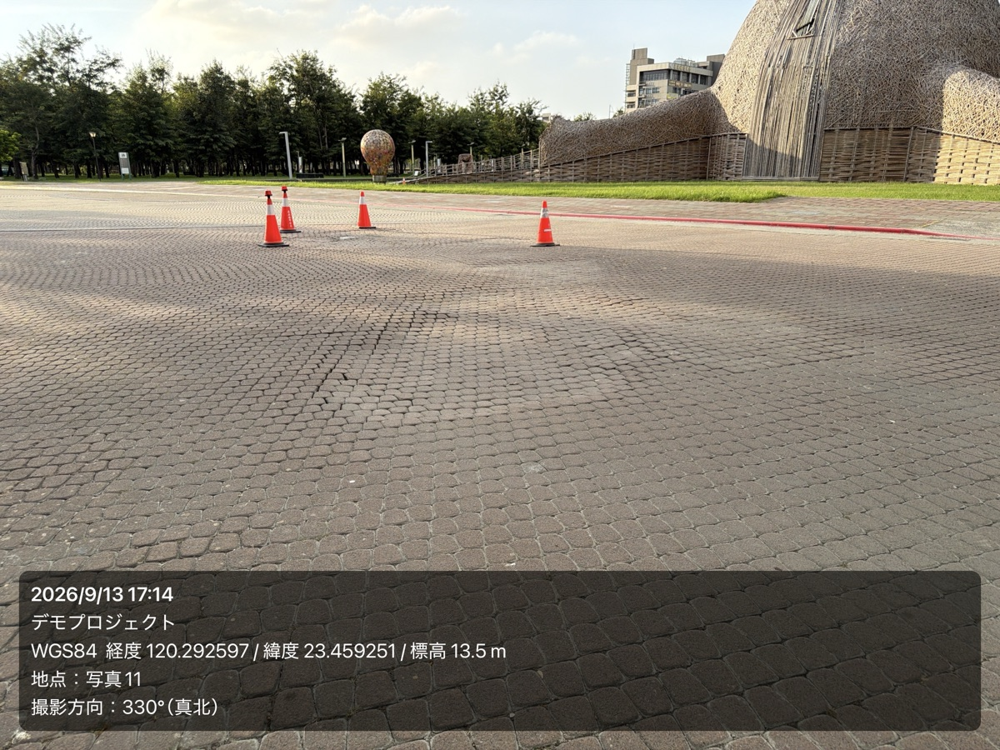
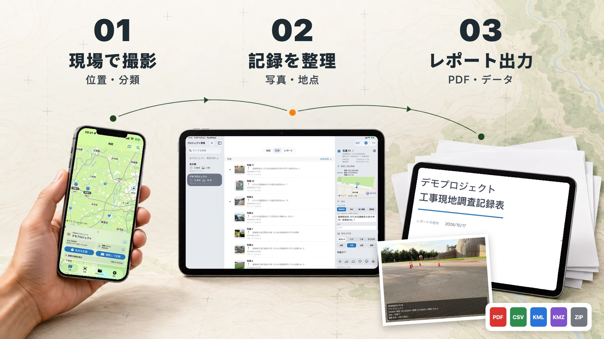
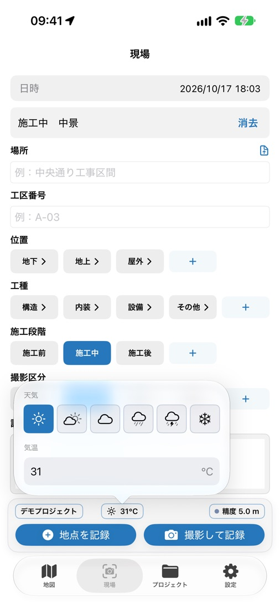
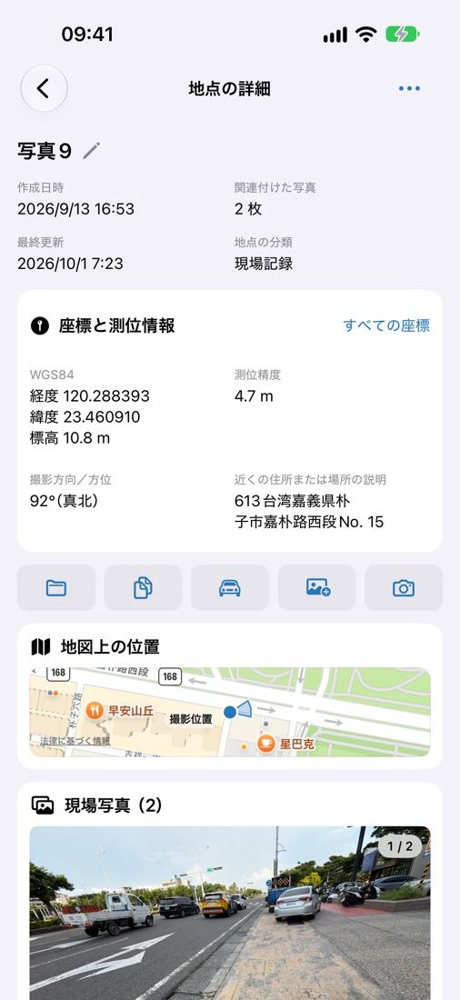
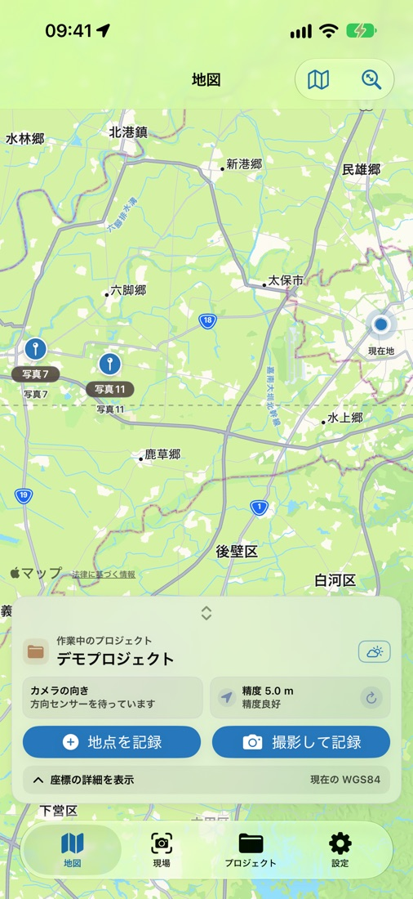
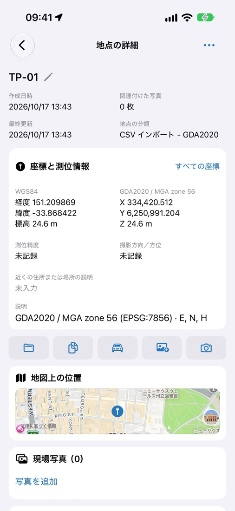
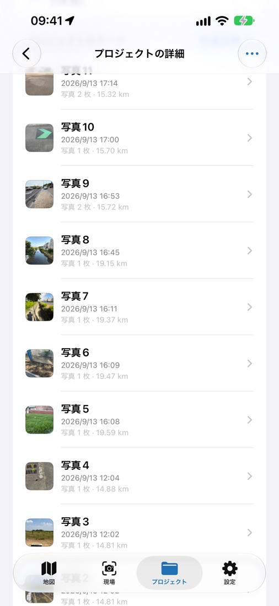
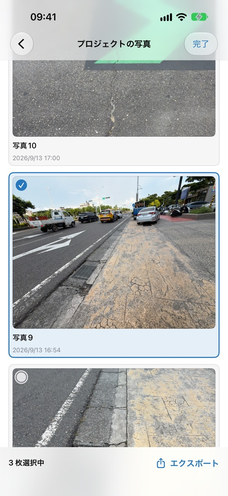

プロジェクトと地点で整理
業務の写真を個人の写真ライブラリと分けて管理できます。プロジェクトごとに場所・工区番号・位置・工種・施工段階・撮影区分をクイック入力でき、写真ごとに同じ内容を打ち直す必要はありません。
Logua Studio
FootPoint は、現場で撮影した写真を位置・撮影方向・日時と結び付けて記録するアプリです。工区・工種・施工段階は現場でタップするだけで入力でき、整理した記録は PDF レポートやデータとしてそのまま提出できます。

業務の写真を個人の写真ライブラリと分けて管理できます。プロジェクトごとに場所・工区番号・位置・工種・施工段階・撮影区分をクイック入力でき、写真ごとに同じ内容を打ち直す必要はありません。
アプリで撮影すると、位置とカメラの向きを写真と一緒に記録できます。現場にいなかった人も、どこから、どちらを向いて撮ったのかを把握できます。地点、写真、撮影方向は地図上でも確認できます。
日本全域で JGD2011 の平面直角座標系（第 I 系～第 XIX 系）と JGD2011 緯度経度に対応。現在地に応じて系を推奨し、手動でも選べます。台湾、オーストラリア、ニュージーランド、グレートブリテンの座標系にも対応し、WGS84 緯度経度は世界中で使えます。
PDF レポートは完全版・簡易版・測量版・現地調査版の 4 種類で、会社ロゴや表紙写真を追加できます。CSV、KML、KMZ、GeoJSON、TXT で書き出して CAD・GIS に活用でき、写真パッケージや ZIP 完全バックアップにも対応。CSV から地点をインポートすることもできます。
アカウント登録は不要で、地点と写真は端末内に保存されます。複数の端末で使う場合は iCloud 同期をオンにすると、ご自身の iCloud アカウントに保存されます。同期、書き出し、共有はすべてユーザーが決められます。
画面は iPhone の言語設定に合わせて切り替わり、PDF レポートもアプリの言語で作成されます。

現場での撮影から、提出する成果まで。






インストール後 7 日間、すべての機能を試せます。
試用終了後も、既存のデータの表示、閲覧、編集、書き出しは引き続き行えます。新しいプロジェクト、地点、写真の作成にはプロ版が必要です。
以上が現在のプロ版の主な機能です。
買い切り。プロ版の主な機能をずっと利用できます。この購入はサブスクリプションではありません。